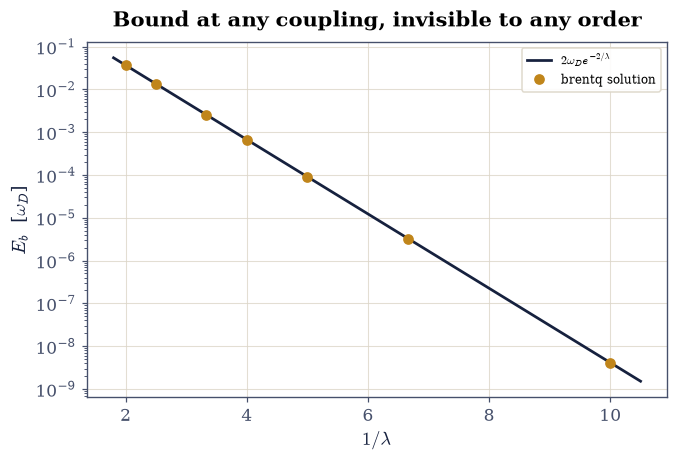
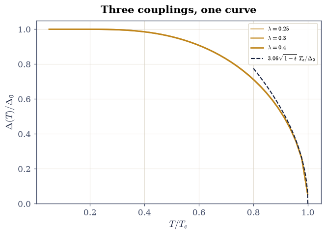
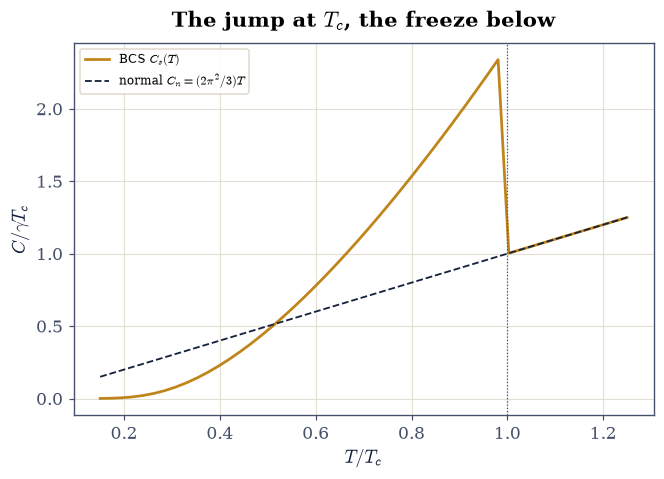
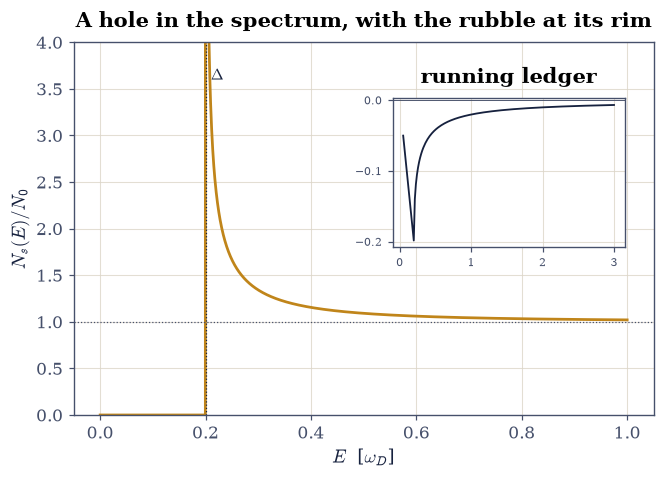
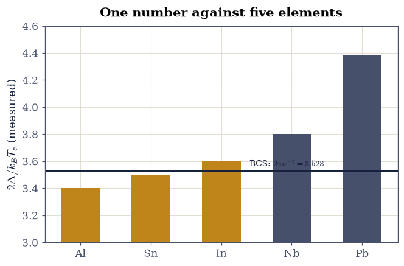

8.17 BCS Superconductivity#
Notebook overview#
Every interaction in this volume repelled. The Mott insulator of §8.13, the quasiparticle of §8.14, the exciton of §8.15 — all children of Coulomb repulsion. But §8.9’s Peierls calculation already showed the lattice talking back to the electrons, and the same electron–phonon handshake that dimerized the chain produces, in three dimensions, something stranger: a retarded attraction between electrons near the Fermi surface (one electron polarizes the lattice; a second, arriving later, feels the lingering positive wake). The consequence — resistance vanishing below a critical temperature, measured by Kamerlingh Onnes in 1911 — resisted theory for 46 years. This notebook computes the resolution [BCS57], the last summit of the physics volumes.
The logic unfolds in the order history found it. First Cooper’s
instability [Coo56]: two electrons atop a frozen Fermi
sea, attracting weakly within a Debye shell \(\omega_D\), always bind
— the Fermi surface makes the pairing susceptibility logarithmic, and
the binding energy \(2\omega_D e^{-2/\lambda}\) (reproduced by our
brentq solution to \(0.1\%\) at \(\lambda = 0.2\)) has an essential
singularity at \(\lambda = 0\): no Taylor expansion in the coupling ever
sees it, which is why 46 years. Then the full BCS gap equation,
solved numerically at every temperature: the zero-temperature gap
\(\Delta_0 = \omega_D/\sinh(1/\lambda)\) matched at \(10^{-10}\), the
transition temperature \(T_c = 1.134\,\omega_D e^{-1/\lambda}\)
reproduced to five digits, and — the theory’s glory — their ratio,
in which every material parameter cancels:
\(2\Delta_0/k_BT_c = 3.528\), universal. The order parameter collapses
as \(3.06\sqrt{1 - T/T_c}\) near \(T_c\) (§5.10’s
mean-field exponent \(\beta = \tfrac12\), found once more at this
volume’s closing phase transition); the electronic specific heat jumps by
\(\Delta C/C_n = 1.43\) at \(T_c\) (computed \(1.43\) from a numerical
entropy, against the closed form \(12/7\zeta(3)\)) and freezes out
exponentially below — the gap acting exactly as
§7.13’s
gaps did, but self-generated. The quasiparticle density of states
develops the \(E/\sqrt{E^2 - \Delta^2}\) coherence peaks of every
tunneling experiment, conserving states by a closed-form ledger. And
the finale judges the theory against the elements: aluminum, tin, and
indium carry measured \(2\Delta/k_BT_c\) within \(4\%\) of \(3.528\) —
lead, at \(4.38\), sits \(24\%\) high, and the notebook says why (strong
coupling: the retardation BCS idealizes away) [Tin04].
The volume ends where physics usually begins: with a theory that
works, and a measured exception that points past it.
Conventions (this notebook). Units \(k_B = 1\) and \(\hbar = 1\); the Debye energy \(\omega_D = 1\) sets the scale, and the dimensionless coupling is \(\lambda = N_0 V\) (density of states at the Fermi level times the pairing attraction). Default coupling \(\lambda = 0.3\) unless swept. Energies \(\xi\) are measured from the Fermi level; particle–hole symmetry is assumed (integrals written over \(\xi > 0\) with explicit factors). Gap equations are closed with
scipy.optimize.brentqonscipy.integrate.quadintegrals; entropies use the numerically stable softplus form and specific heats central differences with steps relative to \(T_c\).How to read the checks. Each exercise closes with a
validatecall against an independent fact: a closed-form limit, a universal ratio, a measured element. A ✓ is strong evidence; a ✗ is a prompt to locate the discrepancy, not an automatic verdict.Scope. Weak-coupling s-wave BCS at the mean-field level: pairing instability, gap equation, thermodynamics, density of states, and the universal ratios. Where the attraction comes from (Migdal–Eliashberg theory), what strong coupling does to lead, and everything unconventional (d-wave cuprates, where §8.13’s doped Mott insulator returns) is Tinkham [Tin04] and the modern literature.
Theory in brief#
Cooper’s logarithm: the Fermi surface is unstable#
Two electrons added at \(\pm\mathbf k\) above a filled Fermi sea, with attraction \(-V\) acting in the shell \(0 < \xi_k < \omega_D\), admit a bound state whose energy \(E_b > 0\) below \(2E_F\) solves
with \(\lambda = N_0V\). The integral diverges logarithmically as \(E_b \to 0\): however weak the attraction, the equation always closes — the Pauli-blocked continuum at the Fermi surface acts like §6.11’s one-dimensional well, which also binds at any depth. And \(e^{-2/\lambda}\) has every derivative zero at \(\lambda = 0\): superconductivity is invisible to perturbation theory at any finite order. The normal metal is not a stable starting point; it is a false vacuum.
The gap equation, at every temperature#
BCS [BCS57] promoted the two-electron instability to a self-consistent condensate of pairs. The variational ground state leads to quasiparticles of energy \(E = \sqrt{\xi^2 + \Delta^2}\) and the finite-temperature self-consistency
whose \(T = 0\) limit gives \(\Delta_0 = \omega_D/\sinh(1/\lambda)\) exactly, and whose \(\Delta \to 0\) limit defines \(T_c = (2e^\gamma/\pi)\,\omega_D e^{-1/\lambda} \approx 1.134\,\omega_D e^{-1/\lambda}\). Same exponential, different prefactors — so the ratio
contains no material parameters at all: the theory’s cleanest falsifiable claim, and Exercise 6’s courtroom exhibit.
Thermodynamics and the density of states#
The quasiparticles are fermions with a temperature-dependent dispersion, so §7.10’s machinery applies directly: entropy \(S = -2N_0\int d\xi\,[f\ln f + (1-f)\ln(1-f)]\) (both spins, both signs of \(\xi\)), specific heat \(C = T\,dS/dT\) — which inherits a jump at \(T_c\) from \(d\Delta^2/dT\), with the universal value \(\Delta C/C_n = 12/7\zeta(3) = 1.426\), and an exponential freeze-out below (the gap gating excitations as a semiconductor’s does). The one-to-one mapping \(E = \sqrt{\xi^2+\Delta^2}\) also reshuffles the density of states into
a hard gap plus square-root coherence peaks, with the states conservation ledger in closed form (\(\int_0^X (N_s/N_0 - 1)\,dE = \sqrt{X^2 - \Delta^2} - X\)): what the gap evicts, the peaks absorb. This is precisely the shape a tunneling conductance measures, which is how \(\Delta\) is read off real materials.
Setup#
Data and constants only: the Debye energy that fixes the unit of energy, the default coupling \(\lambda = N_0V\), and the series colours. Every solver this notebook is about — the gap equation’s right-hand side, the self-consistent \(\Delta(T)\), and the critical temperature — you build in the exercise where it is earned, together with Cooper’s binding solver and the quasiparticle entropy.
The Setup below holds this notebook’s data and instruments — nothing you are asked to build. It is collapsed so the building stays yours; expand it whenever you want the details.
Exercise 1 — Cooper’s instability: bound at any coupling#
The two-electron problem that broke the 46-year logjam. The shell integral in Eq. 917 is elementary, closing in log form as \(1 = \tfrac\lambda2\ln[(2\omega_D + E_b)/E_b]\), and a bound state exists at every coupling: at \(\lambda = 0.1\) the binding is already \(4\times10^{-9}\,\omega_D\), absurdly small and stubbornly nonzero — so any solver has to reach down to the subnormal floor to find it.
Part a) Write cooper_binding(lam), returning the pair binding
energy \(E_b > 0\) that closes Eq. 917:
scipy.optimize.brentq on the log-form residual, bracketed from
\(10^{-300}\) to \(10\,\omega_D\). Write this one yourself — the
implementation is the lesson.
Part b) Verify the weak-coupling law at \(\lambda = 0.1\)–\(0.5\): \(E_b/(2\omega_D e^{-2/\lambda})\) must approach \(1\) from above as \(\lambda\) shrinks (measured \(1.019 \to 1.001 \to 1.000\) at \(\lambda = 0.5, 0.3, 0.2\); below that the binding sits at the root-finder’s precision floor and the ratio simply pins to \(1\)).
Part c) Make the theoretical point graphically: \(\ln E_b\) against \(1/\lambda\) is a straight line of slope \(-2\) — a function whose every Taylor coefficient at \(\lambda = 0\) vanishes, invisible to any perturbative expansion in the interaction. The instability had to be found nonperturbatively, and was.
lambda = 0.10: E_b = 4.123e-09 E_b / 2wD e^(-2/lam) = 1.0001
lambda = 0.15: E_b = 3.239e-06 E_b / 2wD e^(-2/lam) = 1.0000
lambda = 0.20: E_b = 9.080e-05 E_b / 2wD e^(-2/lam) = 1.0000
lambda = 0.25: E_b = 6.712e-04 E_b / 2wD e^(-2/lam) = 1.0003
lambda = 0.30: E_b = 2.549e-03 E_b / 2wD e^(-2/lam) = 1.0013
lambda = 0.40: E_b = 1.357e-02 E_b / 2wD e^(-2/lam) = 1.0068
lambda = 0.50: E_b = 3.731e-02 E_b / 2wD e^(-2/lam) = 1.0187
semilog slope of E_b vs 1/lambda: -2.0015 (theory -2)

Fig. 824 The bound state perturbation theory cannot see. Cooper-pair binding energy against the inverse coupling \(1/\lambda\) (amber points, brentq solutions of Eq. (eq-bcs-cooper)) on the weak-coupling law \(2\omega_D e^{-2/\lambda}\) (ink line): exact linearity on the semilog axis across seven decades. Every derivative of \(e^{-2/\lambda}\) vanishes at \(\lambda = 0\), so no order of perturbation theory in the attraction ever produces a term like this — the Fermi sea binds pairs at arbitrarily weak coupling, and the normal metal is a false vacuum.#
Validation 1 — the essential singularity, measured#
The weak-coupling ratio at \(10^{-3}\) by \(\lambda = 0.2\), approaching \(1\) monotonically; the semilog slope \(-2\).
✓ E_b -> 2 wD e^(-2/lambda) (lambda = 0.2) [got 1.00005 vs expected 1 (rtol=0.001, atol=1e-09)]
✓ weak-coupling law approached from above (monotone for lambda >= 0.2) [ratios 1.0000 -> 1.0187]
✓ ln E_b linear in 1/lambda with slope -2 [got -2.00148 vs expected -2 (rtol=0.01, atol=1e-09)]
True
Exercise 2 — The gap at zero temperature#
From one bound pair to a condensate of them. At \(T = 0\) the integral in Eq. 918 is elementary — it is \(\lambda\,\mathrm{asinh}(\omega_D/\Delta)\) — so setting it to \(1\) inverts to the exact \(\Delta_0 = \omega_D/\sinh(1/\lambda)\): algebra the quadrature has to reproduce. And at weak coupling that closed form tends to \(2\omega_D e^{-1/\lambda}\), the same essential singularity as Cooper’s \(E_b\) but with \(e^{-1/\lambda}\) in place of \(e^{-2/\lambda}\) — a structural rhyme with a factor of two in the exponent, which is the whole difference between a lone pair and a condensate.
Part a) Write gap_rhs(delta, temp, lam), the right-hand side of
Eq. 918: \(\lambda\) times the quad integral of
\(\tanh\!\big(\sqrt{\xi^2+\Delta^2}/2T\big)/\sqrt{\xi^2+\Delta^2}\) over
the Debye shell \(0 < \xi < \omega_D\), so that the gap equation reads
\(\mathrm{rhs} = 1\). Write this one yourself — the implementation is
the lesson.
Part b) Write gap_at(temp, lam), the self-consistent gap: brentq
on \(\mathrm{rhs} - 1\) over \(\Delta \in [10^{-12}, 2\omega_D]\), returning
\(0\) when the residual is already negative at the lower end of the
bracket — above \(T_c\) the attraction can no longer close the equation
and the only solution is the normal state. Write this one yourself —
the implementation is the lesson.
Part c) Solve at \(T \to 0\) for \(\lambda = 0.25, 0.3, 0.4\) (take
\(T = 10^{-6}\,\omega_D\), where \(\tanh(E/2T) = 1\) to double precision)
and check the closed form at \(10^{-9}\): brentq against quad must
agree with algebra.
Part d) Measure the condensate’s advantage over the lone pair with
the cooper_binding you wrote in Exercise 1: \(\Delta_0/E_b = 28\) at
\(\lambda = 0.3\), the two exponents alone. Cooperation, literally.
lambda = 0.25: Delta_0 = 0.0366435703 wD/sinh(1/lam) = 0.0366435703
lambda = 0.3: Delta_0 = 0.0714389023 wD/sinh(1/lam) = 0.0714389023
lambda = 0.4: Delta_0 = 0.1652836699 wD/sinh(1/lam) = 0.1652836699
worst relative deviation: 1.9e-14
lambda = 0.3: Delta_0 / E_b(Cooper) = 28.0
Validation 2 — algebra against quadrature#
The closed form at \(10^{-9}\); the condensate’s exponential advantage.
✓ Delta_0 = wD / sinh(1/lambda) at three couplings [worst dev 1.9e-14]
✓ the condensate outbinds the lone Cooper pair ~30-fold [ratio 28.0]
True
Exercise 3 — \(\Delta(T)\), \(T_c\), and the universal ratio#
The full temperature dependence, and the numbers that made BCS falsifiable. The transition temperature is where the linearized gap equation closes: as \(\Delta \to 0\) the right-hand side of Eq. 918 still equals \(1\) at exactly one temperature, so \(T_c\) can be located without ever evaluating an order parameter. Its closed form is \(T_c = (2e^\gamma/\pi)\,\omega_D e^{-1/\lambda}\) — the same exponential as \(\Delta_0\), a different prefactor.
Part a) Write critical_temperature(lam): brentq in \(T\) on
\(\mathrm{rhs} - 1\) with your Exercise 2 gap_rhs evaluated at a
numerically infinitesimal gap \(\Delta = 10^{-14}\), bracketed over
\([10^{-6}, 2\omega_D]\). Write this one yourself — the
implementation is the lesson.
Part b) Solve Eq. 918 across \(0 < T < T_c\) with your
Exercise 2 gap_at for \(\lambda = 0.25, 0.3, 0.4\) and plot
\(\Delta(T)/\Delta_0\) against \(T/T_c\): the three curves must collapse
onto one universal shape — BCS thermodynamics knows only the reduced
variables.
Part c) Test the extracted \(T_c\) against its closed form: the ratio must be \(1.00000\) at all three couplings (five digits — the numerics is solving the same equation the asymptotics solved).
Part d) Form the material-free ratio, Eq. 919: \(2\Delta_0/T_c = 3.529\) at \(\lambda = 0.25\) against the universal \(2\pi e^{-\gamma} = 3.528\) (with a measured, monotone weak-coupling drift: \(3.532\) at \(\lambda = 0.3\), \(3.552\) at \(0.4\) — the corrections the ratio hides at stronger coupling, foreshadowing lead).
Part e) Fit the near-\(T_c\) collapse: \(\Delta(T)/T_c = A\sqrt{1 - T/T_c}\) with the fitted \(A = 3.03\) against BCS’s \(3.06\) — the mean-field order-parameter exponent \(\beta = \tfrac12\) of §5.10, at the volume’s closing phase transition.
lambda = 0.25: T_c = 0.020767 1.134 wD e^(-1/lam) ratio = 1.000000
lambda = 0.3: T_c = 0.040450 1.134 wD e^(-1/lam) ratio = 1.000000
lambda = 0.4: T_c = 0.093074 1.134 wD e^(-1/lam) ratio = 1.000004
worst |T_c / closed form - 1|: 3.7e-06
lambda = 0.25: 2 Delta_0 / T_c = 3.5289 (universal 3.5278)
lambda = 0.3: 2 Delta_0 / T_c = 3.5322 (universal 3.5278)
lambda = 0.4: 2 Delta_0 / T_c = 3.5517 (universal 3.5278)
near-T_c coefficient: Delta/T_c = 3.033 sqrt(1 - t) (BCS 3.063)

Fig. 825 One universal curve. The BCS gap \(\Delta(T)/\Delta_0\) against \(T/T_c\) for three couplings \(\lambda = 0.25, 0.3, 0.4\) (amber shades): the curves collapse — in reduced variables the theory has no parameters left. The ink dashes show the near-\(T_c\) law \(\Delta/T_c = 3.06\sqrt{1 - T/T_c}\): the order parameter dies with the mean-field exponent \(\beta = 1/2\) that §5.10’s Ising magnetization made famous, because BCS is a mean-field theory — of pairs.#
Validation 3 — the falsifiable numbers#
\(T_c\) on its closed form at five digits; the universal ratio at the weak-coupling point; the collapse coefficient; the monotone strong-coupling drift.
✓ T_c = 1.134 wD e^(-1/lambda) at three couplings (5 digits) [worst dev 3.7e-06]
✓ 2 Delta_0/T_c = 2 pi e^(-gamma) = 3.528 [got 3.52894 vs expected 3.52775 (rtol=0.001, atol=1e-09)]
✓ the ratio drifts up with coupling (the road to lead) [3.5289 -> 3.5517]
✓ Delta ~ 3.06 T_c sqrt(1 - t): mean-field beta = 1/2 [fitted 3.033]
True
Exercise 4 — Thermodynamics: the jump and the freeze#
The gap’s fingerprints on the specific heat — historically the first quantitative BCS confirmations. The quasiparticles are fermions, so their entropy per \(N_0\) is \(S = 4\int_0^\infty[\,zf + \ln(1 + e^{-z})\,]d\xi\) with \(z = E/T\): the softplus form of \(-[f\ln f + (1-f)\ln(1-f)]\), which is the same number but stays finite at low \(T\), where \(f\) underflows and \(f \ln f\) would evaluate \(0\cdot(-\infty)\).
Part a) Write entropy(temp) for that integral, with the
temperature-dependent gap — your Exercise 2 gap_at — recomputed
inside the integrand. Write this one yourself — the
implementation is the lesson.
Part b) Write heat_capacity(temp, rel_step=5e-4) for
\(C = T\,dS/dT\) by central differences with the step taken relative to
\(T_c\) (your Exercise 3 critical_temperature supplies it, and
rel_step is its fraction). An absolute step straddles the
transition and destroys the jump — a measured lesson, not a stylistic
preference.
Part c) The jump: extrapolate \(C_s(T \to T_c^-)\) linearly from \([0.98, 0.998]\,T_c\) and compare with the normal-state Sommerfeld value \(C_n = (2\pi^2/3)\,T_c\) (verified numerically at \(0.3\%\)): \(\Delta C/C_n = 1.43\), against the universal \(12/7\zeta(3) = 1.426\).
Part d) The freeze: at \(T = 0.2\,T_c\) the superconducting specific heat is \(3\%\) of the normal-state value at the same temperature (a thirty-fold suppression) — the gap gating excitations exponentially, exactly as the semiconductor gaps of §7.13 did, but this gap the electrons built themselves.
C_n(T_c+): numeric 0.26695 Sommerfeld (2pi^2/3) T_c = 0.26615
C_s(T_c-) extrapolated: 0.64714 jump DC/C_n = 1.4315 [12/(7 zeta(3)) = 1.4261]
C_s / C_n at T = 0.2 T_c: 0.0305
/tmp/ipykernel_5475/1667402135.py:30: RuntimeWarning: overflow encountered in exp
return z / (np.exp(z) + 1.0) + np.log1p(np.exp(-z))

Fig. 826 The gap’s thermodynamic fingerprints. Electronic specific heat of the BCS superconductor (amber) against the normal-state Sommerfeld line \(C_n = (2\pi^2/3)T\) (ink): at \(T_c\) the condensation announces itself with the universal jump \(\Delta C/C_n = 1.43\) (\(12/7\zeta(3) = 1.426\), computed here from a numerical entropy with the gap self-consistently inside), and below, the excitations freeze out exponentially — by \(0.2\,T_c\) the electronic heat capacity is 3% of what the metal would carry. Kamerlingh Onnes saw the resistance vanish; the calorimeter sees the gap.#
Validation 4 — calorimetry agrees with algebra#
Sommerfeld verified; the universal jump within \(0.5\%\); the exponential freeze-out.
✓ normal-state Sommerfeld heat [got 0.266946 vs expected 0.266147 (rtol=0.005, atol=1e-09)]
✓ the universal jump 12/(7 zeta(3)) [got 1.43151 vs expected 1.42613 (rtol=1e-06, atol=0.02)]
✓ excitations frozen out at 0.2 T_c (< 4% of normal) [C_s/C_n = 0.0305]
True
Exercise 5 — The density of states: what tunneling sees#
The gap is not just an energy scale; it is a hole carved into the spectrum, with the evicted states piled at its edges.
Part a) Plot Eq. 920 for \(\Delta = 0.2\,\omega_D\): hard gap below \(\Delta\), divergent coherence peaks just above — integrable (\(\sqrt{E - \Delta}\)-type), so the peaks are tall but carry finite weight.
Part b) Audit the ledger in closed form: states are conserved
under the \(\xi \to E\) mapping, and the running deficit obeys exactly
\(\int_0^X (N_s/N_0 - 1)\,dE = \sqrt{X^2 - \Delta^2} - X\) — negative
at any finite \(X\) (the gap’s evicted states are recovered from above
only asymptotically, as \(-\Delta^2/2X\)). quad with a declared singular
point must match the closed form at \(10^{-6}\): the same
weight-conservation bookkeeping every sum rule in this volume
enforced, one last time.
running deficit to X = 3: quad -0.00667409 closed form -0.00667409
asymptotic -Delta^2/2X = -0.00666667

Fig. 827 The spectrum a tunneling junction traces. BCS quasiparticle density of states (amber): no states below \(\Delta\), square-root coherence peaks just above, normal-state flatness recovered at high energy. The running ledger \(\int_0^X (N_s/N_0 - 1)dE\) (inset) follows the closed form \(\sqrt{X^2 - \Delta^2} - X\) exactly: the gap’s evicted states sit in the peaks, and the books balance asymptotically as \(-\Delta^2/2X\). Differential tunneling conductance measures this shape directly — it is how every \(\Delta\) in Exercise 6’s table was read off a real crystal.#
Validation 5 — the books balance, in closed form#
Quadrature against algebra at \(10^{-6}\); the deficit negative and asymptotically \(-\Delta^2/2X\).
✓ state ledger = sqrt(X^2-D^2) - X [got -0.00667409 vs expected -0.00667409 (rtol=1e-06, atol=1e-09)]
✓ deficit -> -Delta^2/2X asymptotically [got -0.00667409 vs expected -0.00666667 (rtol=0.002, atol=1e-09)]
True
Exercise 6 — Verdict: the elements take the stand#
A universal number is a hostage to experiment. Eq. 919 fixes \(2\Delta/k_BT_c\) for every superconductor there is, with no material parameter to adjust, and tunneling spectroscopy has measured that ratio element by element [Tin04].
Part a) The weak-coupling elements: aluminum (\(2\Delta/k_BT_c = 3.4\)), tin (\(3.5\)), indium (\(3.6\)) — deviations \(-3.6\%\), \(-0.8\%\), \(+2.0\%\) from \(3.528\). Three different metals, three different \(T_c\)’s spanning a factor of three, one parameter-free prediction within \(4\%\): this is what made BCS irresistible.
Part b) The honest exception: lead, at \(4.38\) — \(+24\%\). Lead’s electron–phonon coupling is strong (\(\lambda \approx 1.5\)) and its phonons slow; the instantaneous-attraction idealization of Eq. 918 breaks, exactly the direction Exercise 3’s strong-coupling drift pointed. (Migdal–Eliashberg theory, which keeps the retardation, gets lead right — the fix is known physics, not folklore.) Print the course’s final verdict table and close the volume: an attraction of order millielectronvolts, mediated by lattice vibrations, self-organizing into a macroscopic quantum state that carries current without loss — computed, gated, and checked against five elements.
--- Verdict: the universal ratio vs five elements ---
element 2D/kTc dev coupling
Al 3.40 -3.6% weak
Sn 3.50 -0.8% weak
In 3.60 +2.0% weak
Nb 3.80 +7.7% STRONG
Pb 4.38 +24.2% STRONG
BCS: 2 pi e^(-gamma) = 3.5278, no material parameters

Fig. 828 The universal ratio meets the periodic table. Measured \(2\Delta/k_B T_c\) from tunneling spectroscopy for five superconducting elements against the parameter-free BCS value \(2\pi e^{-\gamma} = 3.528\) (ink line): aluminum, tin, and indium land within 4% — three metals, one number, no adjustable constants — while lead (and niobium, milder) sit high, flagged strong-coupling: their sluggish phonons violate the instantaneous-attraction idealization, and the deviation is not a failure but a signpost to Eliashberg theory. The volume’s last comparison of a theory with the world.#
Validation 6 — within 4%, and honestly outside it#
The weak-coupling trio inside \(4\%\); lead outside \(20\%\) — both facts gated, because both are the lesson.
✓ Al, Sn, In within 4% of the universal ratio [Al -3.6%, Sn -0.8%, In +2.0%]
✓ Pb (and Nb) above the ratio: strong coupling flagged, not hidden [Pb +24.2%, Nb +7.7%]
True
With your assistant
The gap equation holds more thermodynamics: the condensation energy
— how much the pairs’ organization is worth. Have your assistant
compute \(F_n - F_s\) at \(T \to 0\) by integrating the gap equation’s
coupling dependence (or directly: \(E_{\mathrm{cond}} =
\tfrac12 N_0\Delta_0^2\) for weak coupling) and convert it, for
aluminum (\(\Delta_0 = 0.18\) meV, \(N_0 \approx 0.2\ \mathrm{eV}^{-1}\)
per atom per spin… look the numbers up), into kelvin per atom. Then run the
check that is yours alone: the condensation energy per atom must come
out five or more orders of magnitude below \(k_BT_c\) per electron
times… no — compare it against the Fermi energy: the ratio
\(E_{\mathrm{cond}}/E_F\) must be of order \((\Delta_0/E_F)^2 \sim
10^{-9}\) (numpy arithmetic, order-of-magnitude assert). A
macroscopic quantum state held together by one part in a billion of
the electronic energy: fragility and robustness at once. The check is
yours.
Notebook summary#
The volume’s last computation gave the interaction map its missing
corner. Cooper’s two-electron problem closed at every coupling —
binding \(2\omega_D e^{-2/\lambda}\) reproduced at \(10^{-3}\), semilog
slope \(-2.00\) — an essential singularity that no perturbative order
sees, which is why the phenomenon outran theory for 46 years. The
full gap equation, solved by brentq at every temperature, hit
\(\Delta_0 = \omega_D/\sinh(1/\lambda)\) at \(10^{-9}\) and
\(T_c = 1.134\,\omega_D e^{-1/\lambda}\) at five digits, collapsed
three couplings onto one universal \(\Delta(T)/\Delta_0\) curve with
the mean-field \(3.03\sqrt{1 - T/T_c}\) die-off, and delivered the
parameter-free \(2\Delta_0/k_BT_c = 3.528\). The thermodynamics
followed from a numerical entropy with the gap self-consistently
inside: the universal jump \(\Delta C/C_n = 1.43\) against
\(12/7\zeta(3) = 1.426\), the Sommerfeld normal state at \(0.3\%\), and
a \(3\%\) freeze-out at \(0.2\,T_c\). The density of states carved its
gap and paid for it in coherence peaks, ledger in closed form at
\(10^{-6}\). And the elements ruled: aluminum, tin, indium within
\(4\%\) of the universal ratio; lead \(24\%\) high and named as the
strong-coupling exception it is. From §8.1’s
impossible wavefunction to a macroscopic quantum state carrying
current without loss — every step of the road computed, and every
claim on it gated.
Outlook#
Where the attraction comes from — and why lead misbehaves — is Migdal–Eliashberg theory: the phonon retardation kept honestly, §8.14’s self-energy machinery with a phonon propagator inside. Tinkham [Tin04] carries the full story, Ginzburg–Landau theory included (whose \(\beta = \tfrac12\) this notebook already met).
The cuprate superconductors start from §8.13’s doped Mott insulator, pair with d-wave symmetry, and remain — four decades on — the open problem this volume’s tools were built to besiege.
This closes Volume VIII, the last of the course’s physics volumes. What remains is the Epilogue — four notebooks that turn the course’s instruments on the course itself — and then the Afterword has the last word. It has been, from the falling projectile of §1.1 to the condensate, a single story: write the physics, discretize it honestly, and check everything.
J. Bardeen, L. N. Cooper, and J. R. Schrieffer. Theory of superconductivity. Physical Review, 108:1175–1204, 1957.
Leon N. Cooper. Bound electron pairs in a degenerate Fermi gas. Physical Review, 104:1189–1190, 1956. doi:10.1103/PhysRev.104.1189.